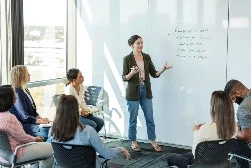
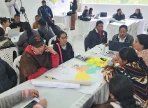

Formación y desarrollo de capacidades
Torre 7 Capacita
Diseñamos experiencias de formación virtual para fortalecer las competencias de personas, equipos y organizaciones.
Nuestra propuesta
Nuestro portafolio integra cursos, talleres, programas institucionales y soluciones de aprendizaje a la medida, con contenidos prácticos orientados a las necesidades de organizaciones sociales, empresas, profesionales y entidades públicas.
Propósito: diseñar y ofrecer experiencias de formación que fortalezcan las competencias de personas, equipos y organizaciones, mediante cursos, talleres y programas virtuales prácticos, pertinentes y orientados a resultados.
Modalidades
Puedes inscribirte en nuestros cursos abiertos, contratar programas para tu equipo o solicitar una propuesta de formación diseñada de acuerdo con las necesidades de tu organización.
Cursos y talleres abiertos al público, con inscripción individual.
Quiero inscribirmeProgramas diseñados y contratados por empresas, ESAL y entidades públicas para sus equipos.
Solicitar un programaCursos virtuales, talleres en línea, recursos descargables y programas de aprendizaje autogestionado.
Solicitar información
Diseño de contenidos, talleres y rutas de formación según las necesidades específicas de cada organización.
Solicitar una propuestaProgramas
Formaciones listas para tu organización o tu equipo. Escríbenos para conocer fechas, duración y condiciones.

Programa para personas que toman decisiones, coordinan equipos o administran recursos sin tener formación financiera.
Solicitar informaciónTaller práctico para desarrollar capacidades de innovación, explorar oportunidades de mejora y generar ideas aplicables a retos organizacionales.
Solicitar información
Formación para estructurar proyectos de cooperación mediante el enfoque de marco lógico.
Solicitar información
Formación orientada a desarrollar capacidades para estructurar proyectos de desarrollo.
Solicitar informaciónPúblicos prioritarios
Capacidades administrativas, financieras, formulación de proyectos y sostenibilidad.
Actualización técnica, gestión financiera, competencias administrativas y desarrollo profesional.
Gestión pública, presupuesto, planeación, indicadores, evaluación y fortalecimiento institucional.
Servicios
Diseñamos cada formación con contenidos prácticos y orientados a resultados.
Hablemos
Cuéntanos qué necesitas: inscribirte en un curso abierto, formar a tu equipo o diseñar un programa a la medida de tu organización.